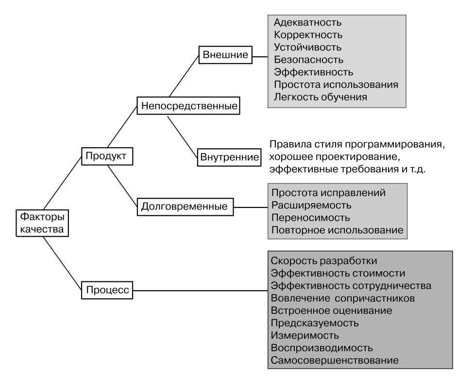

Составляющие качества
Отрывок из книги Бертрана Мейера “Почувствуй класс”
|
|
Качество – главная цель инженерии программ – является понятием со многими различными характеристиками,
часто называемых факторами качества. Давайте рассмотрим некоторые из наиболее важных факторов.
Процесс и продукт
Обсуждение инженерии программ предполагает два дополняющих друг друга аспекта.
- Продукты, представляющие результаты разработки. Наиболее очевидным продуктом
является исходный код, но программные проекты часто включают и такие продукты,
как документы требований и проектирования, тестовые данные, планы проекта, документацию, процедуры инсталляции.
- Процессы – механизмы, используемые для получения этих продуктов.
Число ошибок в поставляемой программе является примером проблемы продукта.
Поставляется ли программа в соответствии с расписанием – пример проблемы процесса.
В каждом случае оба аспекта играют свою роль: процесс определяет, в частности, обнаружение и удаление ошибок,
а выдерживание сроков влияет на продукт, например, из-за опускаемой частично функциональности.
Факторы качества ПО удобно обсуждать, рассматривая их с трех разных позиций.
- Качество процесса, характеризуемое эффективностью процесса разработки.
- Непосредственное качество продукта, характеризуемое адекватностью продукта в том
виде, как он поставляется в последней своей версии.
- Долговременное качество продукта, характеризуемое будущими перспективами. В мире инженерии программ, где проекты могут проживать длинную жизнь, эти факторы столь же важны, как и непосредственная картина.
В каждой области рассмотрим главные цели, начав с наиболее очевидного свойства – качества непосредственного продукта. Обсуждение включает некоторые комментарии, объясняющие, почему некоторые другие факторы играют не столь важную роль. Два общих замечания об этом обзоре:
- Не будут даваться никакие явные определения поясняемых факторов качества («простота использования», «легкость изучения»).
- Можно заметить некоторую относительность в определениях: адекватность означает
удовлетворение определенным потребностям, эффективность – это адекватное использование ресурсов. Это не приводит к неопределенности, скорее наоборот, определение целей качества ПО полезно лишь в той мере, насколько они позволяют оценивать продукты или процессы по отношению к достижению поставленных целей. Определения, следовательно, предполагают, что такие цели явно заданы.
- Эта проблема не просто академическая: вообразите, что вы руководитель проекта и отслеживаете число оставшихся погрешностей в проекте. Когда вы дадите санкцию на
выпуск очередного релиза системы: при числе ошибок, равном 1000, 500, 200, 0? В реальной ситуации необходимо классифицировать погрешности:
- приводящие к зависаниям системы;
- серьезные, но не критические;
- небольшие проблемы, такие как несовершенство пользовательского интерфейса;
- пропущенная функциональность из разряда «хорошо бы иметь», которая может быть отложена на следующий выпуск.
На поставленный вопрос невозможно ответить, если не иметь четких критериев, установленных заблаговременно. Мы вернулись назад к оригинальному определению инженерии программ и его требованию «отвечать определенным стандартам качества».
На следующем рисунке показана общая классификация факторов качества, которые
предстоит рассмотреть.

Качество непосредственного продукта
Качество продукта включает следующие факторы.
- Адекватность: удовлетворение определенным потребностям пользователя. Другими
словами, продукт должен служить целям сообщества пользователей. Другие факторы,
часто упоминаемые в этой области, – это полнота и полезность, но оба они менее точные и могут рассматриваться как частные случаи адекватности. Никогда система не обладает полной функциональностью, поскольку всегда найдется такой пользователь, чьи потребности не удовлетворяются системой. Полезность также является субъективным критерием, если только не установлены четкие критерии «полезности».
- Корректность: выполнение функций системы в соответствии с предписанными спецификациями в случаях, покрываемых спецификациями. Ясно, что это фундаментальноетребование. Точно так же ясно, что корректность трудно достижима. Непросто написать программу, работающую в точном соответствии со спецификациями, но и написание самих спецификаций трудная задача, – необходимо учитывать все возможные случаи. Непросто и написать однозначно понимаемый документ со спецификациями.
Важным следствием этого определения является вывод, что корректность – понятие
относительное. Никогда нельзя сказать, что программная система корректна или некорректна. О корректности системы можно говорить только по отношению к заданной спецификации. В математических терминах «корректность» применяется не к программе, а к паре [программа, спецификация].
- Устойчивость: насколько хорошо система реагирует на ошибочные ситуации ее использования, выходящие за пределы спецификации. Пользователь мог нажать не ту кнопку, сенсор мог неправильно сработать, другая программа прислала ошибочный ввод, – все такие ситуации не должны быть причиной отказа системы от работы или выдачи неверных результатов. Устойчивость предполагает обработку ошибок и механизмы восстановления системы.
- Безопасность: насколько хорошо система защищает себя, свои данные, своих пользователей и любые связанные с ней устройства от враждебных попыток нарушить ее работу. К несчастью, говоря об устойчивости, необходимо заботиться не просто об ошибках, – компьютерные системы часто являются целями преднамеренных вражеских атак. Поэтому нельзя писать ПО, особенно работающее в сети, не учитывающее потенциальных угроз.
- Эффективность (часто называемая производительностью): адекватное использование
времени, памяти и других ресурсов, таких как пропускная способность для систем, осуществляющих передачу данных по сети. Мы говорим об адекватности, но не об оптимальности. Если компилируемой системе требуется 1 МВ памяти, но можно уменьшитьобъем до 0.6 МВ, то такая оптимизация вовсе не обязательно будет полезной, особенно если требует дополнительных затрат. Если вы ожидаете, что ваши пользователи будут иметь достаточно памяти, то лучше потратить время на другие факторы качества. Но если речь идет об устройствах с малой памятью, то оптимизация требуемого пространства может стать критической. И снова речь идет о необходимости объективных критериев.
- Простота использования: непростой выбор – сделать систему простой в использовании для различных групп пользователей. Часто систему пытаются сделать простой для но вичков, но не менее важно помогать экспертам, которые точно знают, что им необходимо, и не хотят проходить через подсказки и информационные окна. Так что «простоту» необходимо поддерживать в широком диапазоне от новичков до экспертов. Каждый из нас новичок в использовании одних инструментов и эксперт – в других. Каждый из нас проходил путь от новичка к эксперту, и система должна поддерживать нас на этом пути.
- Легкость (простота) обучения: понятие, тесно связанное с предыдущим фактором.
Долговременное качество продукта
Некоторые качества продукта не оказывают непосредственного влияния на его текущих
пользователей, но важны для тех, кто занимается его поставкой. Если я водитель автомобиля, то меня не очень волнует простота модификации ПО, отвечающего за работу кондиционера, мне важно, чтобы кондиционер хорошо работал (непосредственный фактор). Но если я отвечаю за разработку ПО для Nissan или BMW, то я должен учитывать долговременную
перспективу: будет ли система просто обновляться, сможет ли версия, разработанная для седанов, быть преобразована за разумные деньги в версию для кабриолетов?
При описании ПО часто встречается термин «пользователь», приобретший уже почти мифический смысл. Хорошо заботиться о пользователях, но с точки зрения долговременной
перспективы сопричастники включают и другие группы, о которых следует заботиться. Более общие термины – клиенты, заказчики – применимы как к нынешним пользователям, так и к тем, кто работал или будет работать с системой в будущем.
Качества, ориентированные на долгий период, включают:
- простоту исправлений: насколько просто обновить ПО для устранения погрешностей
(корректности, устойчивости, безопасности, простоты использования …). Одним из
рецептов по достижению этого фактора является структура системы: необходимо проектировать модульную структуру, легко понимаемую и отражающую структуру стоящей проблемы и ее решения;
- расширяемость: простота добавления функциональности. И здесь ключом является
структура. Изученная нами ОО-техника – абстракция данных, скрытие информации,
классы, универсальность, контракты, наследование, динамическое связывание, агенты и прочее – облегчает расширение. Расширяемость является принципиальным требованием практической разработки ПО, поскольку функциональность практически
каждой системы подвергается изменениям.
Причины изменений могут быть разные: в начальном определении требований пропущены некоторые функции, отложенные на время возможности, как следствие успеха системы, ведущее к ее развитию. Хороший процесс разработки выстраивает дисциплину таких изменений, определяя строгие процедуры анализа новых запросов;
- переносимость: насколько просто перенести ПО на другие платформы. Под платформой здесь понимается комбинация архитектуры компьютера и его операционной системы плюс другие ресурсы, необходимые системе, такие как системы управления базами данных. За последние десятилетия в ИТ-индустрии накоплен большой опыт по конструированию переносимого ПО. Для общецелевых вычислений на рынке компьютерного железа предлагается несколько архитектур (Pentium и совместимые с ним, Sparc, PowerPC), мир операционных систем – это Windows, Unix-варианты, такие как Linux, Solaris и Mac OS. Что же касается языков программирования, то большинство из них доступны на разных платформах;
- повторное использование: какая доля продукта может быть использована в будущих разработках. Многим приложениям нужна одна и та же функциональность, либо общей природы (структуры данных и фундаментальные алгоритмы, механизмы GUI), либо нацеленная на одну и ту же прикладную область. Повторно используемое ПО – это ПО, достаточно независимое от конкретного проекта и допускающее использование в последующих проектах. Объектная технология направлена на повторное использование и ведет к построению программных компонентов, служащих потребностям многих разработок. Даже не создавая целенаправленно программных компонентов, следует прилагать усилия по созданию ПО, допускающего использование в будущих проектах.
В литературе можно найти ссылки на фактор качества, называемый сопровождаемостью,
предполагающий простоту работы с системой после выпуска начального релиза. Это важное
понятие не является независимым фактором, а представляет комбинацию уже рассмотренных долговременных факторов, так как сопровождаемость включает и фиксацию ошибок, и
расширение функциональности и перенос на другие платформы.
Все рассмотренные до сих пор свойства являются внешними факторами качества: они представляют прямой интерес для клиентов. Качество включает и внутренние факторы, характеризующие то, как фактически написана система, эти факторы значимы только для разработчиков. Неформально со многими из них вы знакомы, поскольку они соответствуют советам по проектированию и программированию.
- При проектировании ПО классы должны отражать релевантные абстракции данных,
- между классами должны устанавливаться подходящие отношения (наследования и клиентские),
- необходимо использовать преимущества разработанных образцов проектирования,
- включать осмысленные контракты,
- применять скрытие информации,
- встраивать в проект документацию и использовать комментарии,
- писать проект в читаемом стиле, облегчающем его будущее расширение.
Еще одним примером внутренних факторов является список свойств, определяемых ниже. Этими свойствами должны обладать правильно построенные документы, задающие требования к системе, но некоторые из них применимы и к программам. Внутренние качества – это тот фундамент, на котором строится качество системы. Внешние факторы, внешние свойства достижимы только при высоком внутреннем качестве системы. Корректность и простота исправлений, например, сводятся в конечном итоге к систематическому программированию, архитектурному стилю и правильно установленным контрактам.
Но нужно понимать, что, в конечном счете, значение имеют внешние факторы, так как
они напрямую связаны с потребностями клиентов, в интересах которых создается система.
Качество процесса
Факторы процесса оценивают качество механизмов, применяемых для создания ПО. Они
включают:
- скорость разработки: способность поставлять продукт в сжатые сроки. Каждый проект должен заботиться об этом, клиенты ждут, конкуренты не дремлют, акционеры размышляют;
- эффективность стоимости. Об этом также заботятся почти все проекты. В инженерии программ (в отличие от некоторых других видов инженерии) стоимость готового продукта незначительна. Над всем доминирует стоимость разработки (за исключением, возможно, расходов на маркетинг, которые могут быть существенными, особенно для продуктов, ориентированных на массовый рынок). Стоимость разработки определяют затраты на персонал, оборудование, офис. По этой причине стандартной мерой стоимости является человеко-месяц: средняя стоимость расходов на одного работника в месяц (все включено);
- эффективность сотрудничества: эффективность процедур, обеспечивающих наилучшее взаимодействие всех членов команды, работающей над проектом. Серьезные проекты могут включать большое число участников. Требуется уделять особое внимание механизмам координации. Коммуникация участников – довольно деликатная проблема, которая для команд большого размера может перевесить все остальные аспекты разработки. Экстремальная форма этого феномена известна как закон Брукса (по имени проектировщика операционной системы IBM OS/360), который говорит, что «добавление людей в проект, не укладывающийся в сроки, удлиняет время разработки». Хотя можно считать, что этот закон верен только для плохо управляемых проектов, но он ясно характеризует суть проблемы коммуникации;
- вовлеченность сопричастников: степень учета в проекте всех релевантных потребностей и точек зрения людей, так или иначе вовлеченных в проект;
- встроенное оценивание: включение в процесс механизмов и процедур, измеряющих
факторы качества на хорошо определенных этапах. Качество не должно только декларироваться, но его нужно проверять и принуждать к его соблюдению. Хорошо организованный процесс интегрирует эту задачу как один из своих компонентов;
- предсказуемость: включение в процесс надежных методов оценивания других факторов качества – в частности, скорости и стоимости разработки. Предсказуемость – одна из наиболее важных характеристик хорошего процесса. Иногда гарантированная дата так же важна, как и ранняя дата. В ИТ-индустрии нет достаточной статистики в этой области, мы не знаем, сколь много проектов не выдерживали сроков и выходили за рамки отведённого бюджета. Ситуация с годами улучшается благодаря применению принципов и методов инженерии программ;
- измеримость: пригодность количественных критериев для определения достижимости других факторов качества, как процесса, так и продукта, например, методы измерения уровня ошибок. Эффективное управление нуждается в точных измерениях развития проекта. Этот критерий тесно связан с двумя предшествующими, так как, чтобы делать предсказания и давать оценки, требуется возможность проведения измерений;
- воспроизводимость: независимость разработки, методов управления и предсказания от несущественных атрибутов конкретных проектов. В большинстве случаев индустриальная разработка проекта не ведется изолировано. Крайне важно достигнутые успешные результаты в одном проекте воспроизводить в других проектах (ошибки в проектах также заслуживают тщательного анализа);
- самосовершенствование: включение в саму спецификацию процесса механизмов, квалифицирующих и улучшающих этот процесс. Организации, подобно людям, могут
обучаться на собственном опыте. Критерий самосовершенствования оценивает, в какой степени процесс, определённый в организации, отвечает этому феномену, за счет включения встроенных механизмов оценки, которые могут служить обратной связью для процесса, адаптируя его в соответствии с уроками обучения.
Компромиссы
В то время как разработка должна стремиться к достижению наилучшего качества по всем
показателям, предшествующий обзор показывает, что компромиссы неизбежны.
- Компромисс между факторами процесса и продукта: совершенствование продукта может отрицательно воздействовать на фактор «скорость разработки».
- Компромисс между факторами продукта: простота использования не всегда сочетается с безопасностью, так как мы хотим сделать продукт простым для законных пользователей. Пароли плохи с позиций простоты, но хороши для безопасности. Оптимизация в интересах эффективности может конфликтовать с простотой исправлений (так как может приводить к хитро закрученному коду). Эффективность, учитывающая особенности конкретной платформы и контекста, конфликтует с расширяемостью, переносимостью и повторным использованием.
Одна из характеристик хорошо управляемого проекта состоит в том, что компромиссы
анализируются и разрешаются явным образом. В противном случае они все равно были бы
разрешены как-либо, но далеко не очевидно, что это было бы сделано лучшим образом. Типичный пример – оптимизация, в которой нет очевидной необходимости, но которая может
отрицательно влиять на другие факторы.
|